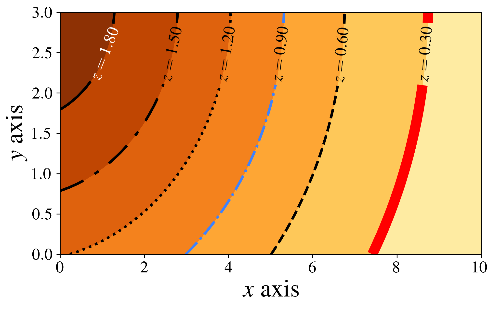
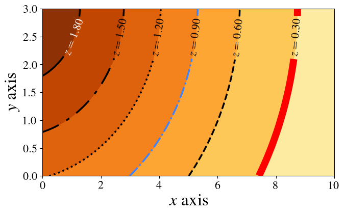

Contour plot

fig_size = (8, 6)
tick_size = 16
if True:
# this is a latex constant, don't change it.
pts_per_inch = 72.27
# write "\the\textwidth" (or "\showthe\columnwidth" for a 2 collumn text)
text_width_in_pts = 246.0
# inside a figure environment in latex, the result will be on the
# dvi/pdf next to the figure. See url above.
text_width_in_inches = text_width_in_pts / pts_per_inch
# make rectangles with a nice proportion
golden_ratio = 0.618
# figure.png or figure.eps will be intentionally larger, because it is prettier
inverse_latex_scale = 2
# when compiling latex code, use
# \includegraphics[scale=(1/inverse_latex_scale)]{figure}
# we want the figure to occupy 2/3 (for example) of the text width
fig_proportion = (3.0 / 3.0)
csize = inverse_latex_scale * fig_proportion * text_width_in_inches
# always 1.0 on the first argument
fig_size = (1.0 * csize,golden_ratio * csize)
# find out the fontsize of your latex text, and put it here
text_size = inverse_latex_scale * 12
tick_size = inverse_latex_scale * 8
# learn how to configure:
# http://matplotlib.sourceforge.net/users/customizing.html
params = {'backend': 'ps',
'axes.labelsize': text_size,
'legend.fontsize': tick_size,
'legend.handlelength': 2.5,
'legend.borderaxespad': 0,
'xtick.labelsize': tick_size,
'ytick.labelsize': tick_size,
'font.family': 'serif',
'font.size': text_size,
# Times, Palatino, New Century Schoolbook,
# Bookman, Computer Modern Roman
'font.serif': ['Times'],
'ps.usedistiller': 'xpdf',
'text.usetex': True,
'figure.figsize': fig_size,
# include here any neede package for latex
'text.latex.preamble': r'\usepackage{amsmath}',
}
plt.rcParams.update(params)fig, ax = plt.subplots(figsize=fig_size)
fig.subplots_adjust(left=0.12, right=0.96, top=0.96, bottom=0.18,
hspace=0.02, wspace=0.02)
def truncate_colormap(cmap, minval=0.0, maxval=1.0, n=256):
new_cmap = matplotlib.colors.LinearSegmentedColormap.from_list(
'trunc({n},{a:.2f},{b:.2f})'.format(n=cmap.name, a=minval, b=maxval),
cmap(np.linspace(minval, maxval, n)))
return new_cmap
cmap = plt.get_cmap('YlOrBr')
my_cmap = truncate_colormap(cmap, 0.2, 0.9)
minX = 0
maxX = 10
minY = 0
maxY = 3
N = 50j
y, x = np.mgrid[minY:maxY:N, minX:maxX:N]
z = 2 * np.exp(-(0.02 * (x + 1) ** 2 + 0.05 * (y - 3.1) **2 ))
divisions = np.arange(0.3, 2.1, 0.3)
divisions2 = np.append(divisions, 2.5)
divisions2 = np.append(-0.5, divisions2)
# contour filled with colors
ax.contourf(x, y, z, divisions2, cmap=my_cmap, vmin=0.0,vmax=2.0)
line_styles = ['solid', 'dashed', 'dashdot', 'dotted', (0, (10,5,2,5)), 'solid', ]
line_widths = [10, 2.5, 2.5, 2.5, 2.5, 2.5]
colors = ['red', 'black', 'xkcd:dodger blue', 'black', 'black', 'black']
# contour lines
cont = ax.contour(x, y, z, divisions,
colors=colors,
linewidths=line_widths,
linestyles=line_styles)
# labels
manual_locations = [(1.0, 2.5), (2.5, 2.5),
(3.8, 2.5), (5.0, 2.5),
(6.2, 2.5), (8.3, 2.5)]
ax.clabel(cont, inline=1, fontsize=tick_size,
fmt=r'$z=%.2f$', manual=manual_locations,
colors=5 * ['black'] + ['white'])
ax.set_xlabel(r"$x$ axis")
ax.set_ylabel(r"$y$ axis")
fig.savefig('contour_plot.png', dpi=300)